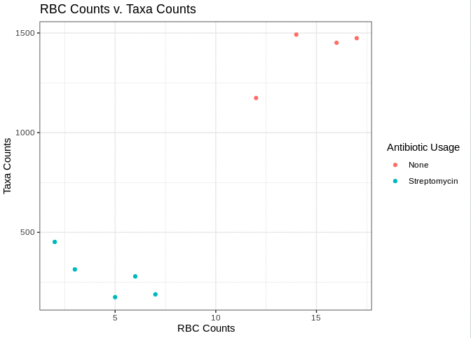

Intro To R Script
Markdown Language
- Way of writing HTML content without having to deal with HTML code
- At the top of the page you'll notice a header section
- this header section is defined by two sets of three dashes
- contains
- the title of our markdown report
- the output format of our markdown report
- In the body of the document headers can be specified by adding hastags before the text
- Lists can be specified by adding a dash or asterisk before the text
- for more information on markdown formatting visit: https://www.markdownguide.org/basic-syntax/
- While we will be working with an R markdown document today you can also run code in an R script. To open an R script you can go to File > New File > R Script.
NOTE: R scripts will end in ".R", while R markdowns will end in ".Rmd"
Code chunks
- code chunks can be included in our markdown document with two sets of three tick marks
- you'll notice in the brackets we add in,
r, which indicates we are running R code
Let's start with R by defining what is called a variable. We can run this chunk of code by clicking the play button in the corner of the code chunk:
num <- 18
num
output
[1] 18
What did we do:
- assigned the value 18 to the word "num"
- assign value with the "<-" operator
- call the value of this variable with the word "num"
- NOTE: our variable appears in the environment window to the right.
- NOTE: when we ran the code chunk our console window shrank! This is because our output is appearing below the code chunk. We can always reopen it by clicking on it!
Variable Names
- variable names are case sensitive
- they can include any combination of:
- lower-case letters
- upper-case letters
- underscores/periods/numbers (however, these cannot be the first character)
second.number.2 <- 2
third_number_3 <- 3
fourthNumber4 <- 4
Whate did we do:
- we assigned three numbers 2,3,4 to the variables second.number.2, third_number_3,fourthNumber4
- all are valid variable names
- keep you variable names as short as possible to still convey what they represent
- just be consistent with your naming convention
Variable Properties
- When we define variables we can treat that variable name as the value itself
- We can also add variable names together
- We can assign more than one value to a variable name
Let's try this out in code!
# add 5 to num
num <- num + 5
num
# assign 20 to new num and add it to num
new_num <- 20
new_num + num
#create a variable with multiple values
combined <- c(3,4,6)
combined
output
[1] 23
[1] 43
[1] 3 4 6
What did we do:
- First we added 5 to the variable
num - We assigned that num + 5 back to the variable
numwhich overwrote the original value of 18! (now it's 23) - we assigned a new variable
new_numto the value 20 and then showed we can add the values ofnew_numandnumtogether with just their names - we then assigned multiple values to the variable
combinedby separating values by commas and enclosing them inc() -
this variable with multiple values is called a vector!
-
You'll also note we add text inside our code block by putting a hashtag in front of it. This is called a comment and they are very useful in giving your code context.
Accessing/Manipulating Values in a Vector
- Suppose we want to access one value in our vector
combined - We can do this by specifying the value number in that vector.
- Let's try grabbing the second value in
combined
# call the second value in combined
combined[2]
# replace second value in combined
combined[2] <- 10
combined[2]
output
[1] 4
[1] 10
What did we do:
- grabbed the second value in
combinedby specifying the vector and then the number value we want in brackets - vectors in R are one-indexed meaning that when you want the first value in a vector you use
[1], second value you would use[2]and so on - we also replaced the second value of
combinedby callingcombined[2]and reassigning it to10
Libraries
- R has a collection of base functions (we just used the file.copy() function!)
- However, there are thousands of other functions we can use by importing different libraries
- Tufts HPC has a collection of different libraries pre-installed we can use!
Let's access that collection and import a library:
.libPaths("/cluster/tufts/hpc/tools/R/4.0.0/")
library(tidyverse)
output
Registered S3 methods overwritten by 'dbplyr':
method from
print.tbl_lazy
print.tbl_sql
── Attaching packages ─────────── tidyverse 1.3.0 ──
✓ ggplot2 3.3.5 ✓ purrr 0.3.4
✓ tibble 3.1.6 ✓ dplyr 1.0.8
✓ tidyr 1.2.0 ✓ stringr 1.4.0
✓ readr 1.4.0 ✓ forcats 0.5.1
── Conflicts ────────────── tidyverse_conflicts() ──
x dplyr::filter() masks stats::filter()
x dplyr::lag() masks stats::lag()
What did we do:
- we used the .libPaths() function to point to where Tufts is keeping this collection of R packages
- after pointing to this location we can import a package!
- here we imported the tidyverse package using the library() function
Importing Data
So what does this package do? - the tidyverse package contains all sorts of functions to load, manipulate, and visualize data!
Let's try use the read_delim() function to import some data:
# load our data
meta <- read_delim(file="../data/meta.tsv",
delim = "\t")
What did we do:
- specified where our data is
- it is one folder up (a.k.a. "../") and in the data folder ("data/")
- we specified the delimiter or the separator between our data
- here we say "\t" to indicate our file is separated by tabs
- assign our data to the variable "meta"
Inspecting Data
- It is good practice to inspect your data before using it
- we can use the str() function to get a high level summary of our data :
str(object=meta)
output
spec_tbl_df [9 × 5] (S3: spec_tbl_df/tbl_df/tbl/data.frame)
$ SampleID : chr [1:9] "sample 1" "sample 2" "sample 3" "sample 4" ...
$ AntibioticUsage: chr [1:9] "None" "None" "None" "None" ...
$ Day : chr [1:9] "Day0" "Day0" "Day0" "Day0" ...
$ Organism : chr [1:9] "mouse" "mouse" "mouse" "mouse" ...
$ TaxaCount : num [1:9] 1174 1474 1492 1451 314 ...
- attr(*, "spec")=
.. cols(
.. SampleID = col_character(),
.. AntibioticUsage = col_character(),
.. Day = col_character(),
.. Organism = col_character(),
.. TaxaCount = col_double()
.. )
What did we do:
- we input our variable "meta" into the str() function which takes some
object, here specify thatobjectis our variablemeta - Our output indicates a few things:
- the dimensions of our data (9 rows by 5 columns)
- our data is a table/data.frame
- the names of our columns (SampleID, AntibioticUsage, etc.)
- the data type of our columns (chr = character data, num = numeric data)
- how many values per column
- a preview of the first few values
NOTE: If you want more information on R data types and how to convert between data types, visit: https://swcarpentry.github.io/r-novice-inflammation/13-supp-data-structures/
To view the entire data frame, click on the variable in the environment window: - here we can see the entire data frame and even search for values - You'll note that our rows are different samples - and our columns are different attributes about those samples
Accessing Values By Number
- We can access values in our data frame by specifying their row and column
- Let's try finding the value in the second row and the third column:
meta[[2,3]] # [[row,column]]
meta[[3]][2] # [[column]][row]
output
[1] "Day0"
[1] "Day0"
What did we do:
- accessed our value using double brackets
- single brackets would subset our data frame instead of accessing our value
- we can either specify the row then column inside the double brackets
- or specify our column in double brackets and then the second element in single brackets
Accessing Values By Name
- But what if we don't have our index number? What if we wanted to determine the antibiotic usage of "sample 5"?
- Let's see how we can do this:
#data[[column name]]
meta[["AntibioticUsage"]]
output
[1] "None" "None" "None" "None" "Streptomycin" "Streptomycin" "Streptomycin"
[8] "Streptomycin" "Streptomycin"
# data[[column name]][data[[column name]]==pattern]
meta[["AntibioticUsage"]][meta[["SampleID"]]=="sample 5"]
#data$ColumnName[data$ColumnName == pattern]
meta$AntibioticUsage[meta$SampleID=="sample 5"]
output
[1] "Streptomycin"
[1] "Streptomycin"
What did we do:
- first we accessed our AntibioticUse column by calling our data frame, then in double brackets we reference our column name.
- we accessed our value by:
- specifying the column in double brackets
- we then use single brackets to select some value in that column
- we then specify a condition:
- where the column "SampleID" is equal to "sample 5"
- second we accessed our value by using the "$" operator
- when we are dealing with a data frame we can use the "$" operator to avoid having to write double brackets!
Comparison Operators
- You'll have noticed above we used a comparison operator
- We asked which value in the "SampleID" column was equal to "sample 5"
- Let's look at some other comparison operators:
==equals!=does not equal<less than>greater than=<less than or equal to>=greater than or equal to%in%is a value in another set of values&and|or- Let's try to use these operators to ask a few questions about our data:
- Do we have any samples with over 1000 different taxa?
- Is "sample 8" in our SampleID column?
# first let's see if there are any samples with over 1000 different taxa
# df$column_name1[df$column_name2>threshold]
meta$SampleID[meta$TaxaCount>1000]
# now let's see if there is a "sample 8" in our SampleID column
# pattern %in% df$column_name
"sample 8" %in% meta$SampleID
output
[1] "sample 1" "sample 2" "sample 3" "sample 4"
[1] TRUE
What did we do:
- To identify samples with over 1000 different taxa we:
- specified our SampleID column
- specified our condition column (here it is TaxaCount)
-
used the greater than operator and threshold to specify we only want to identify samples with a TaxaCount greater than 1000
-
To identify if "sample 8" was in our Sample ID column we:
- specifed our pattern (here it is "sample 8")
- specified our column of interest (SampleID)
- used the %in% operator to see if our pattern was in our column of interest
Applying Subsetting To Data Frames
- So far we have accessed individual values in a data frame. But what about filtering our data frame?
- Let's filter or subset our data frame into two data frames:
- one with just samples and their antibiotic usage
- another with samples on Day 5 of treatment
# filter data frame for just samples and their antibiotic usage
# df[c("column_name1","column_name2")]
samples_antibiotics <- meta[,c("SampleID","AntibioticUsage")]
head(samples_antibiotics)
output
SampleID AntibioticUsage
<chr> <chr>
1 sample 1 None
2 sample 2 None
3 sample 3 None
4 sample 4 None
5 sample 5 Streptomycin
6 sample 6 Streptomycin
# filter data frame for just samples on Day 5 of treatment
#df[df$column_name == pattern,]
day_5 <- meta[meta$Day == "Day5",]
head(day_5)
output
SampleID AntibioticUsage Day Organism TaxaCount
<chr> <chr> <chr> <chr> <dbl>
1 sample 5 Streptomycin Day5 mouse 314
2 sample 6 Streptomycin Day5 mouse 189
3 sample 7 Streptomycin Day5 mouse 279
4 sample 8 Streptomycin Day5 mouse 175
5 sample 9 Streptomycin Day5 mouse 452
What did we do:
- To filter the data frame for just samples and their antibiotic usage:
- specified our data frame (meta)
- identified which columns we wanted to keep within
c() - specified we are grabbing columns by placing our column names behind the comma
- saved this filtered data frame to
samples_antibiotics - used the
head()function to view the first 6 rows of our new data frame - To filter the data frame to just samples on Day 5 of treatment:
- specified our data frame (
meta) - specified the column we intend to filter (
Day) - used
==to filter for only values that are equal to "Day5" - specified we are filtering rows by placing the comma after our pattern
Merging Data Frames
- Often times you may want to merge in data from another data frame
- Let's see how to do this!
# read in second meta data file
meta2 <- read_delim("../data/meta2.tsv",delim = "\t")
head(meta2)
output
SampleID RBC
<chr> <dbl>
1 sample 1 12
2 sample 2 17
3 sample 3 14
4 sample 4 16
5 sample 5 3
6 sample 6 7
# merge with existing meta data file
merged <- inner_join(
x = meta,
y = meta2,
by = c("SampleID")
)
head(merged)
output
SampleID AntibioticUsage Day Organism TaxaCount RBC
<chr> <chr> <chr> <chr> <dbl> <dbl>
1 sample 1 None Day0 mouse 1174 12
2 sample 2 None Day0 mouse 1474 17
3 sample 3 None Day0 mouse 1492 14
4 sample 4 None Day0 mouse 1451 16
5 sample 5 Streptomycin Day5 mouse 314 3
6 sample 6 Streptomycin Day5 mouse 189 7
What did we do:
- we read in another data frame from our
datafolder and named this data framemeta2 - we then previewed this data frame to see that we have our SampleID column and a new column
RBC - we then use the inner_join function to merge the two data frames, which takes:
xdata frame 1ydata frame 2,bythe column to merge on in both data frames- we then use the
head()command to preview our merged data frame
Adding Columns
- Sometimes you may want to create columns in your data frame based on data in your existing data frame:
# add column based on data on data
merged$RBC_Status <- ifelse(
test = merged$RBC > 13,
yes = "High RBC Count",
no = "Low RBC Count"
)
head(merged)
output
SampleID AntibioticUsage Day Organism TaxaCount RBC RBC_Status
<chr> <chr> <chr> <chr> <dbl> <dbl> <chr>
1 sample 1 None Day0 mouse 1174 12 Low RBC Count
2 sample 2 None Day0 mouse 1474 17 High RBC Count
3 sample 3 None Day0 mouse 1492 14 High RBC Count
4 sample 4 None Day0 mouse 1451 16 High RBC Count
5 sample 5 Streptomycin Day5 mouse 314 3 Low RBC Count
6 sample 6 Streptomycin Day5 mouse 189 7 Low RBC Count
What did we do:
- we added a new column by specifying the name of our data frame,
mergedand then the new column name after the$symbol - used the
ifelse()function to add different values based on sometest - here our test was to see if the value in the
RBCcolumn was over 13 - if the answer was
yes, it was over 13, then we input the value "High RBC Count" - if the answer was
no, it was under 13, then we input the value "Low RBC Count" - we again use the
head()function to preview our updated data frame
Creating a Factor
- We have two data types in our data frame, character values, and numeric values
- Sometimes a character value will have an order to it (i.e. low, medium, high)
- In R when you provide an order to a character variable it is a factor data type
- Let's make our RBC Status column a factor specifying the order should be Low then High RBC count
# make the day column a factor
merged$RBC_Status <- factor(
merged$RBC_Status,
levels = c(
"Low RBC Count",
"High RBC Count"
)
)
merged$RBC_Status
output
[1] Low RBC Count High RBC Count High RBC Count High RBC Count Low RBC Count Low RBC Count Low RBC Count
[8] Low RBC Count Low RBC Count
Levels: Low RBC Count High RBC Count
Visualizing Data
- Now for the fun part of R: data visualization!
- There are a few different ways to plot in R, but today we will show you how to plot using the
ggplot2package as it is widely popular among R users. - NOTE:
ggplot2is a part of thetidyversepackage that we already loaded so we don't need to load it again. - Here we will plot:
- RBC counts versus Taxa Counts
- Antibiotic Usage versus Taxa Counts
rbc_v_taxa <- ggplot(merged, # data to use
aes(x=RBC, # x axis data
y = TaxaCount, # y axis data
color=AntibioticUsage))+ # column to color data by
geom_point()+ # this plot is a scatterplot
theme_bw()+ # the theme is theme_bw()
labs(
x="RBC Counts", # x axis title
y="Taxa Counts", # y axis title
color="Antibiotic Usage", # legend title
title="RBC Counts v. Taxa Counts" # figure title
)
rbc_v_taxa

What did we we do:
- Created a scatter plot where:
- we used the
ggplot()function to specify our data, and inside this function we used theaes()function to specify which columns we wanted to plot (x axis being theRBCcolumn and the y axis being theTaxaCountcolumn) - inside the
aes()function we specified thecolorargument to indicate we want to color by the columnAntibiotic Usage - we used the
geom_point()function to specify this is a scatter plot - we used the
theme_bw()function to style this plot using thetheme_bw()style - we used the
labs()function to specify our X axis title, y axis title, legend title and figure title - we then saved this figure to the variable
rbc_v_taxa - For more information on plotting with ggplot visit:
http://www.sthda.com/english/wiki/be-awesome-in-ggplot2-a-practical-guide-to-be-highly-effective-r-software-and-data-visualization
Saving Plots/Data
- Now that we have created all this wonderful data and plots we should learn how to save them!
# to save new data frame
write_delim(x = merged,
file = "../results/merged.tsv",
delim = "\t")
# to save our plot
ggsave(filename = "../results/rbc_v_taxa.png",
plot = rbc_v_taxa)
What did we do:
- To save our new merged data frame:
- we used the
write_delimfunction - specified our data frame, or
xargument, to be the variablemerged - we said we wanted to save our
fileone folder up "../" in the results folder, "results/" as "merged.tsv" -
we also noted that our file should be separated or delimited,
delim, by tabs\t -
To save our plot:
- we used the
ggsavefunction - we said we wanted to save our file (
filename) one folder up "../" in the results folder, "results/" as "rbc_v_taxa.png" - specified our plot,
plot, to be the variablerbc_v_taxa
Getting Help
- Sometimes we won't know what every function does.
- Let's investigate the
aes()function we just used to create our plot!
?aes
What did we do:
- To investigate the
aes()function we: - put a
?in front of the function of interest. - then in the help window we see a description of the function and examples on how to use it!
Creating the Markdown Report
- Now this combination of text and code can be "knitted" into a report of our choice.
- Today we will be creating an HTML page of our results.
- For a full list of R markdown output options visit:
https://rmarkdown.rstudio.com/lesson-9.html
- To create our output file go to the top of the script window and click "Knit"!
Thanks for taking part in the Intro To R for the Life Sciences Tutorial!
So as a summary we learned about:
- project organization
- R packages and how to access them on the tufts HPC
- working with variables and data frames
- visualizing data
- and finally writing a markdown report of our findings